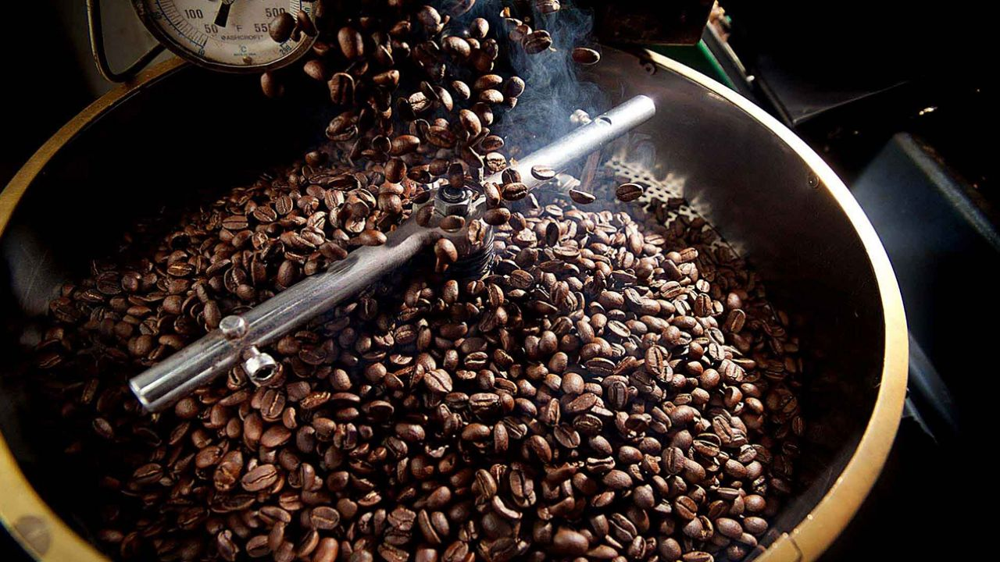
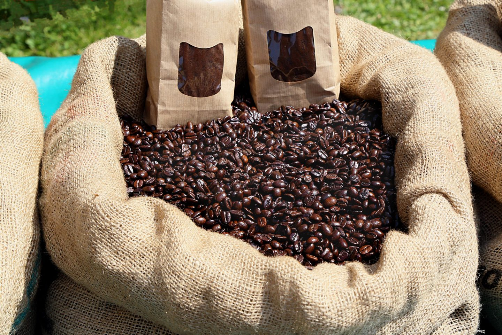
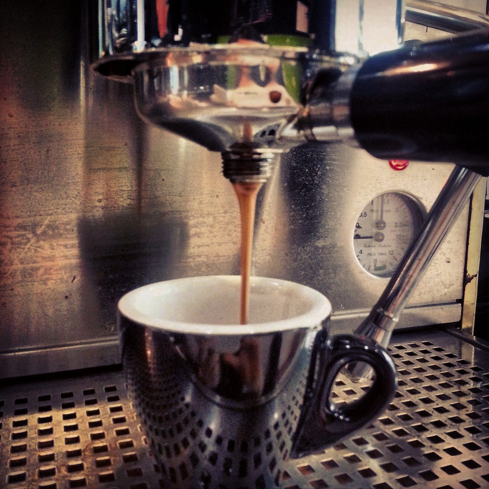

Despulpado o procesamiento
Una vez terminada la cosecha, se secan los granos mediante una técnica húmeda o seca, en función del gusto que queramos obtener. Posteriormente, se eliminan todos los residuos y se procede a quitar las capas que en vuelven los granos de café, para obtener el café limpio o verde. Una vez finalizado el proceso, se clasifica el producto obtenido mediante diferentes criterios.
Tueste
En esta fase, el producto adquiere el sabor y aroma por la que reconocemos nuestra taza de café, mediante el procesamiento del grano en hornos. Gracias a ello, se consigue aumentar el tamaño del mismo, reducir su cafeína, perder la humedad y adquirir el color tostado típico que caracteriza el café.

Envase y comercialización
Llegamos a la última etapa de la producción del café. Si se trata de café en grano o molido, se puede comercializar directamente mediante una previa actuación del molinillo. Usualmente, esta etapa se realiza en el país de consumo del café, mediante un envase previo al vacío.

Preparación del café
Existen múltiples formas de poder preparar un buen café, en función del gusto del consumidor final. Encárgate de escoger la mejor cafetera para tu negocio o hogar y saborea las mejores recetas para disfrutar de esta particular y preciada infusión.

Video del procedimiento del cafe en polvo